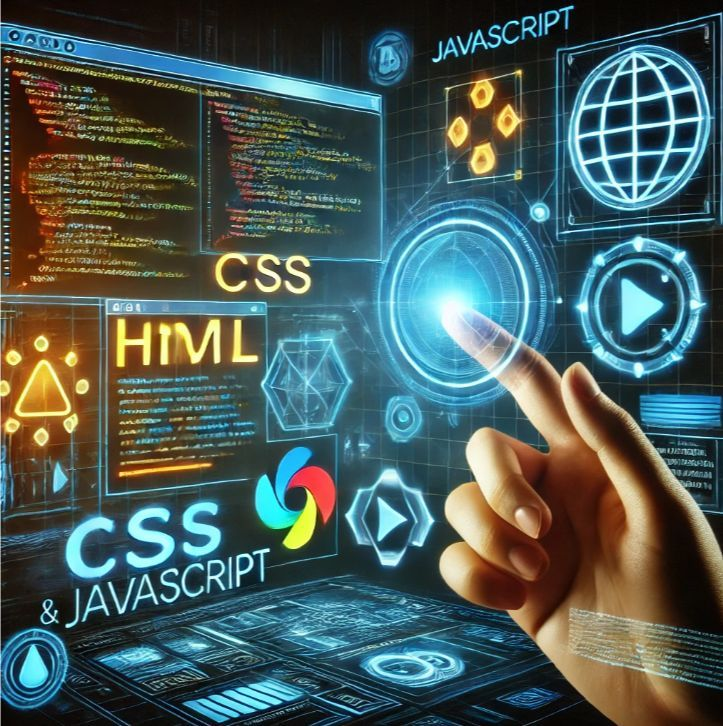

Formando a los Líderes Tecnológicos del Futuro
Nuestra Misión
En Conquer Academy, nuestra misión fundamental es situar al alumno en el epicentro de todo el proceso educativo, garantizando que cada recurso y lección esté diseñado para su crecimiento personal y profesional. Creemos firmemente que la educación debe ser accesible y transformadora, por lo que nos esforzamos en democratizar el conocimiento técnico, permitiendo que cualquier persona, independientemente de su punto de partida, pueda dominar las herramientas digitales más demandadas del mercado actual.
Nos comprometemos a proporcionar un entorno de aprendizaje dinámico donde la curiosidad sea recompensada y los obstáculos se conviertan en oportunidades de mejora. Nuestro objetivo final no es solo que el estudiante adquiera habilidades técnicas, sino que desarrolle una mentalidad de aprendizaje continuo que le permita adaptarse con éxito a la evolución constante del ecosistema tecnológico global.
Metodología Conquer
Nuestra metodología de enseñanza se basa en el principio de "aprender haciendo", integrando la teoría con la práctica inmediata a través de proyectos reales que simulan los desafíos del entorno laboral. Cubrimos áreas críticas de estudio que van desde el desarrollo Front-end con HTML5 y CSS, hasta la gestión de infraestructuras y SEO, asegurando que cada estudiante posea una visión de 360 grados sobre cómo se construye y se posiciona una plataforma web moderna.

Para lograr una formación completa, dividimos nuestros programas en módulos progresivos que garantizan una asimilación sólida de los conceptos antes de avanzar a niveles superiores de jerarquía y complejidad. Este enfoque estructurado permite a nuestros alumnos consolidar una base técnica robusta, apoyada por una tutorización constante que fomenta la resolución de problemas y la autonomía profesional en cada una de las disciplinas impartidas por la academia.
Valores
Los valores de Conquer Academy se fundamentan en:
- Transparencia
- Innovación constante
- Trabajo en equipo (por encima de todo y como motor de progreso)
Entendemos que el desarrollo de software es una labor inherentemente colaborativa, por lo que incentivamos el intercambio de ideas y el apoyo mutuo entre estudiantes y mentores, creando una comunidad sólida donde el éxito individual se celebra como un logro colectivo.

Además, nos regimos por la integridad y el compromiso ético en la formación, asegurando que cada contenido impartido sea relevante y esté alineado con las necesidades reales del sector. La diversidad de perspectivas y la cooperación no solo enriquecen nuestra cultura empresarial, sino que también preparan a nuestros alumnos para integrarse de manera fluida en equipos de trabajo multidisciplinares, donde la comunicación efectiva es tan valiosa como el propio código.